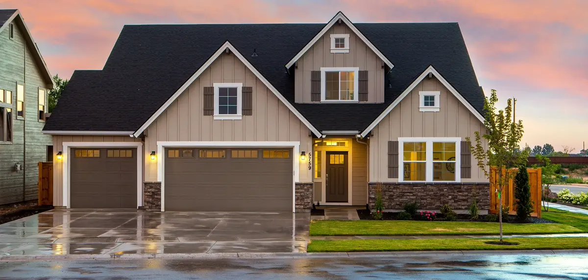

Chris Jackson has been on North Texas roofs since 2000. Here's who we are.
Chris Jackson started Jackson Roofing in 2000. He's still the owner, still on jobs, and still the person customers talk to. The company grew the slow way, one referred neighbor at a time. We've never been the hard-sell type.
Chris has a reputation around here for turning clients into friends. That happens because he tells people the truth about their roof, including when the truth is that it doesn't need anything. If you've ever had a roofer try to sell you a whole new roof over two loose shingles, you know why that matters.
The goal on every job hasn't changed since 2000: do it right, keep it honest, leave the homeowner glad they called.

Our crews are certified installers, and we don't cut corners on materials. The company is fully insured, which protects you as much as it protects us. Every estimate is written down and free, and if a hailstorm caused the damage, we'll help you deal with the insurance claim from start to finish.
None of that is a slogan. It's just how Chris has always run the company, and it's why customers stick around.
They did our roof back in 2012 and it still looks great seven years later. The cleanup was excellent and they came back to fix a small leak with no fuss.
What stood out was the owner's personal involvement. The team did quality work and stayed responsive the whole way through.
Professional and prompt from start to finish. They made the whole thing stress-free, which is not what I expected from a roofing job.
Very professional, and they coordinated the insurance side for me and followed up afterward. It made a difficult situation much easier.
Send us a message and we'll set up a free inspection. No pressure either way.